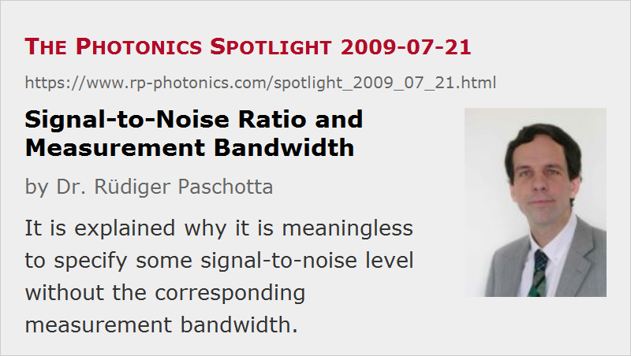

Signal-to-Noise Ratio and Measurement Bandwidth
Posted on 2009-07-21 as a part of the Photonics Spotlight (available as e-mail newsletter!)
Permanent link: https://www.rp-photonics.com/spotlight_2009_07_21.html
Author: Dr. Rüdiger Paschotta, RP Photonics Consulting GmbH
Abstract: It is explained why it is meaningless to specify some signal-to-noise level without the corresponding measurement bandwidth.

Ref.: encyclopedia articles on noise specifications, power spectral density
Even in scientific papers, I encounter fairly frequently the following situation. There is some kind of RF spectrum exhibiting a narrow-band signal and a noise background, and the authors report that the signal is higher than the noise by some number of decibels. However, a measurement bandwidth is not specified. The same happens in situations where there is an optical spectrum with some narrow-band laser line and an ASE background.
The trouble is that the number of these decibels (often interpreted as some signal-to-noise ratio) depends on the measurement bandwidth. If the spectrum displays some kind of power in a certain (possibly not specified) bandwidth, a narrow-band signal (i.e., a signal with a bandwidth well below the measurement bandwidth) will lead to a peak height which is not dependent on the measurement bandwidth. On the other hand, the measurement bandwidth will directly affect the noise level: the larger the measurement bandwidth, the more noise is captured. This means that such kind of signal-to-noise ratio is meaningless if the measurement bandwidth is not specified. Needless to say, meaningless statements shouldn't have a place in scientific papers …
This article is a posting of the Photonics Spotlight, authored by Dr. Rüdiger Paschotta. You may link to this page and cite it, because its location is permanent. See also the RP Photonics Encyclopedia.
Note that you can also receive the articles in the form of a newsletter or with an RSS feed.
Questions and Comments from Users
Here you can submit questions and comments. As far as they get accepted by the author, they will appear above this paragraph together with the author’s answer. The author will decide on acceptance based on certain criteria. Essentially, the issue must be of sufficiently broad interest.
Please do not enter personal data here; we would otherwise delete it soon. (See also our privacy declaration.) If you wish to receive personal feedback or consultancy from the author, please contact him e.g. via e-mail.
By submitting the information, you give your consent to the potential publication of your inputs on our website according to our rules. (If you later retract your consent, we will delete those inputs.) As your inputs are first reviewed by the author, they may be published with some delay.
|  |
If you like this page, please share the link with your friends and colleagues, e.g. via social media:
These sharing buttons are implemented in a privacy-friendly way!